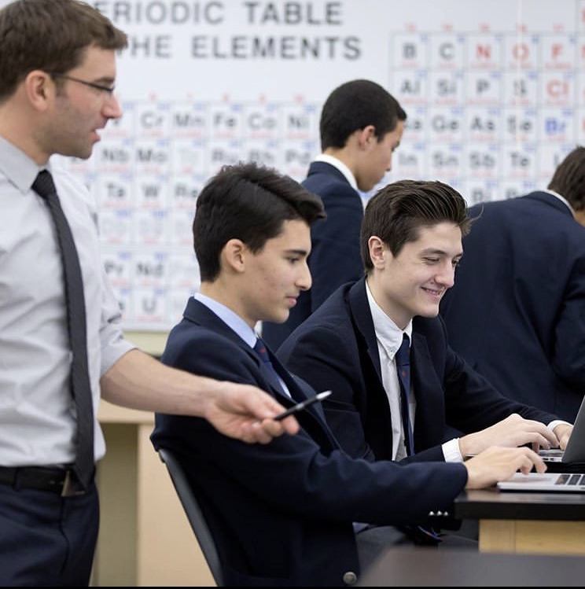
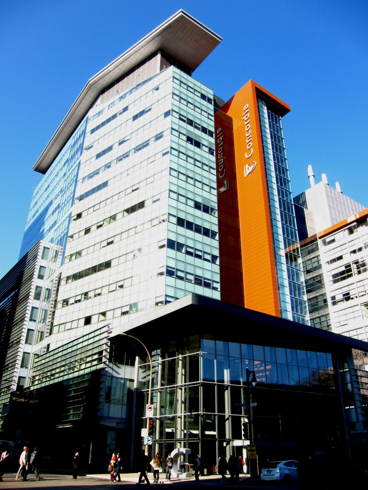

{% extends 'home.html' %}
{% block title %}Education{% endblock %}
{% block header %}Education{% endblock %}
{% block subheader %}{% endblock %}
{% block firstpic %}{% endblock %}
{% block first %}
Lower Canada College
{% endblock %}
{% block firstpara %}I attended Lower Canada College for the the entirety of my primary and secondary
education. The school has a kindergarten program, which I attended as well. This is a picture of me in physics class
in the ninth grade.{% endblock %}
{% block secondpara %}Going to this school was a true pleasure. Among the countless life lessons I learned
throughout my time in this school, the most important one was respect. This school taught me to respect
people. I was taught that everyone deserves to be shown respect. I will carry this lesson throughout my life
and I will never forget it. I finished my life at LCC by doing grade 12. Following that, I came to Concordia. This is where I'm studing now
and so far, I like the school.{% endblock %}
{% block toptitle %}
Concordia University{% endblock %}
{% block onepara %}
I now go to school at Concordia University in Montreal. I am doing a Bachelor of Engineering
and majoring in Software Engineering. I'm doing the extended credit program. I had to choose this program because
I went to grade 12 at LCC. By going to grade 12, I skipped cegep completely. I had to make up for this by taking
courses at Concordia such as Linear Algebra, Mechanics, Electricity & Magnetism and Calculus 2. I am now taking core
courses.{% endblock %}
{% block twopara %}I have really been enjoying the university experience. Concordia is a nice school
and I have made a lot of great friends during my time here. The professors have been good with
a few really standing out as being the best at what they do. Although being in Software Engineering is a big
accomplishment, I will continue to work hard and always strive to do better than I am doing now. {% endblock %}
{% block secondpic %}{% endblock %}